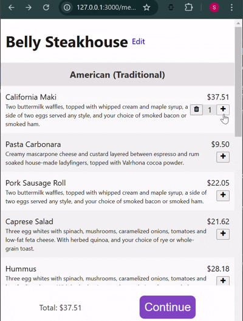

¡Bienvenido/a! Hoy continuaremos desarrollando "Menu Express".
Dado que este es el tercer día, hagamos un pequeño repaso, ¿te parece?
¡Suena emocionante! Empecemos :)
Primero necesitaremos crear un modelo Order para que nuestros usuarios puedan hacer pedidos de los artículos en nuestra aplicación:
rails g model orders status:integer user:references menu:references
Ahora bien, dado que las órdenes van a tener muchos artículos y los artículos van a pertenecer a muchas órdenes, significa que estamos lidiando con una relación de muchos a muchos. Esto a su vez implica que necesitaremos un modelo OrderItem. ¡Así que generémoslo!
rails g model order_items item:references order:references price:float quantity:integer
Ahora nuestro diagrama de base de datos se ve así:

Es bastante estándar, pero hay 2 cosas que quiero señalar. Los lectores con más experiencia quizás ya se hayan dado cuenta:
Para manejar la lógica de nuestro carrito de compras (es decir, agregar/eliminar artículos de nuestras órdenes), ¿deberíamos usar un OrdersController o un OrderItemsController?
La respuesta correcta es un OrderItemsController. La razón es que “Order item” es la entidad central en el flujo del carrito de compras. Esto también nos permite basarnos en las funciones de recarga en vivo de Turbo 8 (es decir, morphing, actualizaciones sin perder la posición de scroll, etc.).
Agreguemos algunas rutas:
resources :orders, only: :edit
resources :order_items, only: [:create, :update, :destroy]
Nuestra lógica de order_items consistirá en tres acciones:
También agregué un edit de la orden, en el cual mostraremos al usuario la lista de los artículos seleccionados. Podría haber sido también un index de order_items. La idea es la misma en cualquier caso.
Primero crearemos un partial en shared/_item_adder.html.erb:
<% order_item ||= OrderItem.new(item:, quantity: 0) %>
<div class="menu__item-adder-wrapper">
<div class="menu__item-adder">
<% if order_item.persisted? %>
<% if order_item.quantity == 1 %>
<%= button_to order_item, method: :delete do %>
<i class="fa fa-trash"></i>
<% end %>
<% else %>
<%= button_to order_item, params: { order_item: { item_id: order_item.item_id, quantity: order_item.quantity - 1 } },
onclick: "setTimeout(() => this.removeAttribute('disabled'), 0);" do %>
<i class="fa fa-minus"></i>
<% end %>
<% end %>
<div class="menu__item-quantity">
<%= order_item.quantity %>
</div>
<% end %>
<%= button_to order_item, params: { order_item: { item_id: order_item.item_id, quantity: (order_item.quantity || 0) + 1 } },
onclick: "setTimeout(() => this.removeAttribute('disabled'), 0);" do %>
<i class="fa fa-plus"></i>
<% end %>
</div>
</div>
Ahora echemos un vistazo a la acción create:
def create
item = Item.find(order_item_params[:item_id])
order = current_user.orders.pending.find_or_create_by(menu: item.menu)
order.order_items.create!(**order_item_params, price: item.price)
redirect_back_or_to :root
end
¿Bastante simple, cierto?
La acción update es aún más sencilla:
def update
@order_item.update(order_item_params)
redirect_back_or_to :root
end
Y la acción destroy es un poco más interesante, ya que redirige al menú si estás borrando el último artículo de la orden:
def destroy
order = @order_item.order
if order.items.one?
order.destroy
redirect_to @order_item.menu
else
@order_item.destroy
redirect_back_or_to :root
end
end
¡Genial!
También crearemos el edit de la orden ahora que estamos en ello:
<%# esta línea es súper importante! Le dice a Rails que evite un refresco de página completo y preserve el scroll, haciendo que la página se sienta como una SPA. %>
<%= turbo_refreshes_with method: :morph, scroll: :preserve %>
<div class="menu-wrapper">
<div class="order">
<% @order_items.each do |order_item| %>
<% item = order_item.item %>
<div class="order__item">
<div>
<%= item.name %>
<div class="order__item-description">
<%= item.description %>
</div>
</div>
<div class="order__item-adder-interface">
<div>
<%= number_to_currency order_item.price %>
</div>
<%= render "shared/item_adder", order_item: %>
</div>
</div>
<% end %>
</div>
<div class="order__footer-wrapper">
<div class="order__footer">
<span>Total: <%= number_to_currency @total_price %> </span>
<%= link_to "#" do %>
<button class="btn-primary btn-checkout">
Proceder al pago
</button>
<% end %>
</div>
</div>
</div>
¡Perfecto! Aquí está el resultado final:

¡Eso es todo! Siempre puedes seguir el progreso en el repositorio de Github.
¡La próxima vez implementaremos pagos reales! ¡No te lo pierdas!